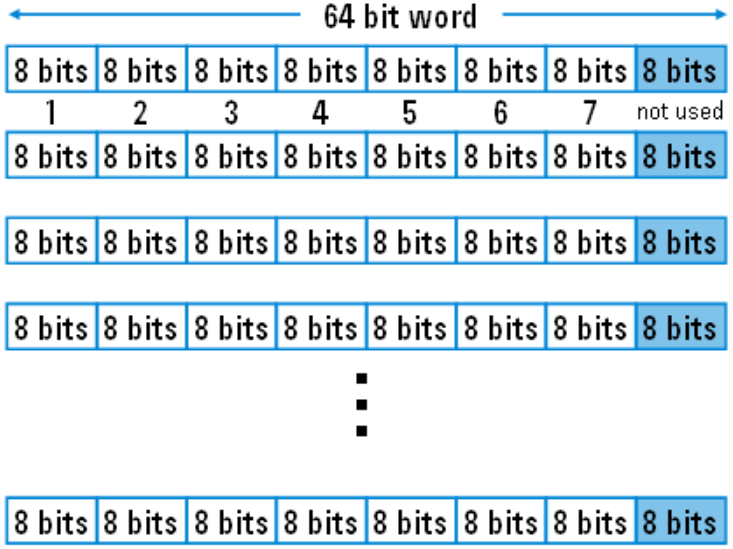

How Vectors are Stored in Sequencer Memory
Pin Scale channel cards have one RDRAM physically, for storing both the vector and sequencer setup data. This physical architecture means they can be stored flexibly. You can use all the area in the RDRAM for storing both the vector and sequencer setup data, as "SM" (sequencer memory area).
Structure of vectors in the sequencer memory
The memory is arranged as 64M x 8 bits of RDRAM and organized in words of 64 bits.
- A 64 bit word consists of 8 frames of 8 bits each.
- The last frame of each word may not be used for vectors.
- A single vector requires 8 bits.
- One word holds up to 8 vectors.

All 8 bits of the vector allow for 256 combinations (0 to 255), which are entries in the Physical Waveform Table (refer to The Physical Waveform Table). Thus, every vector stores a Physical Waveform Index value. For every pin, the Vector Memory stores binary values in the range of 0 to 255.
Sequencer instructions have a length of 64 bits (one instruction per word).
Set the sequencer memory depth for each channel in the model file, as shown in the following example:
10101-10216: HW = CS, speed = 400MHz, smem = 64M,
tim = w32-d8-r6The above example means you can use the total 64 M for storing both the vectors and sequencer programs. At this time, if you use 56 M for vectors, you can use up to 8 M for sequencer programs.
When you define a new pattern in this mode, select SM
(sequencer memory area) for the vector location where the vectors of the pattern will be stored
for parallel vectors
anytime.
Functional changes
- Introduced before SmarTest 6.3.2